CCpayments●
CXapi●
GMdocs●
— laptop.ts.net —
OCinfra●
Run Claude Code, Codex, Gemini CLI, OpenCode, and now raw shell sessions (bash, zsh, fish, PowerShell) in persistent terminal sessions — controllable from a desktop app, a CLI, or a full-screen TUI. Sessions outlive your GUI, survive restarts, and can be shared over Tailscale with browser-trusted TLS.
AgentHub is a single binary with a background daemon. The GUI is optional, sessions are durable, and every control surface is first-class.
Sessions live in a standalone background process. Close the GUI, drop the SSH, unplug your laptop — agents keep running where you left them.
Native desktop app (Wails + React + xterm.js), full CLI (agenthub attach), and a Bubble Tea TUI with near-GUI parity. All talk to the same daemon.
Share a session with one click. Each share mints an HMAC-signed, session-bound capability token; QR codes encode a short /join exchange code, not the cap URL. Let's Encrypt TLS on Tailscale, self-signed TLS + password fallback on LAN.
Multiple viewers on the same session. Independent scrollback, --readonly observer mode, per-client identity, and max-wins PTY resize arbitration.
macOS (signed & notarized universal), Linux (deb + generic tar), Windows (NSIS installer). Native system tray on every platform.
Finds Claude Code, Codex, Gemini, and OpenCode across nvm, Volta, Homebrew, snap, flatpak, cargo, pipx, and platform installers — even when launched from Finder.
WCAG-audited color schemes from the xterm-theme library. Live-switch and persist — including OpenCode, which honors the theme via SIGUSR2 broadcast.
Tmux-style persistent status bar during CLI attach. Shows session name, agent, hostname, elapsed time, and live viewer count without corrupting output.
Run bash, zsh, fish, powershell.exe, or pwsh as a first-class session alongside the four AI CLIs. One Shell entry across GUI, TUI, and agenthub new shell; one Shell binary path in Settings drives every surface. Shells can't auto-expose — toggling web share raises an explicit confirmation banner.
Eight curated, vendored xterm.js addons: WebGL renderer (with software-fallback detection), Cmd-F scrollback search, safe web-links with IDN/typosquat confirmation, inline sixel images, Unicode 11, "Save Terminal As…", OSC 52 clipboard, OSC 9;4 progress. All toggle-able from Settings, hot-swap where possible.
HMAC-signed, session-bound capability tokens for every share. Server-bound read-only. Strict WebSocket Origin allowlist. Vendored xterm assets with a strict CSP. Signed + notarized releases with SLSA L2 build provenance. One-click signing-key panic button.
Auto-update checker, quit-confirmation with session count, start-minimized option, and a native tray menu listing live sessions.
Whichever way you like to drive a terminal, AgentHub meets you there. All three surfaces talk to the same session engine over a local Unix socket.
Wails + React shell with xterm.js tabs, collapsible sidebar, and in-app settings.
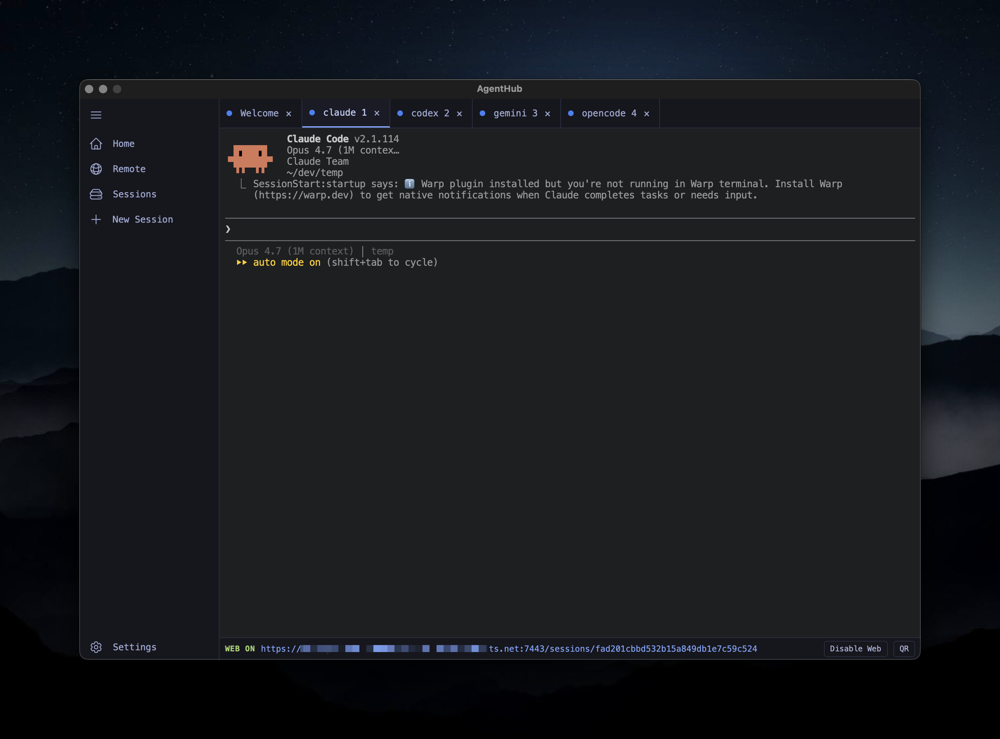
Full PTY attach with tmux-style status bar. JSON output. Ctrl-\ detach.
Bubble Tea v2 with sidebar navigation, modals, QR overlay, and remote peer sessions.
Flip one toggle and AgentHub mints an HMAC-signed, session-bound capability token. The share URL carries the cap; the QR encodes a short /join exchange code so a leaked screenshot never grants access. Sharing is explicit — sessions don't auto-expose.
GetCertificate, with a self-signed + password-auth fallback on LAN.agenthub attach hostname:id proxies over WSS.?readonly can't bypass it.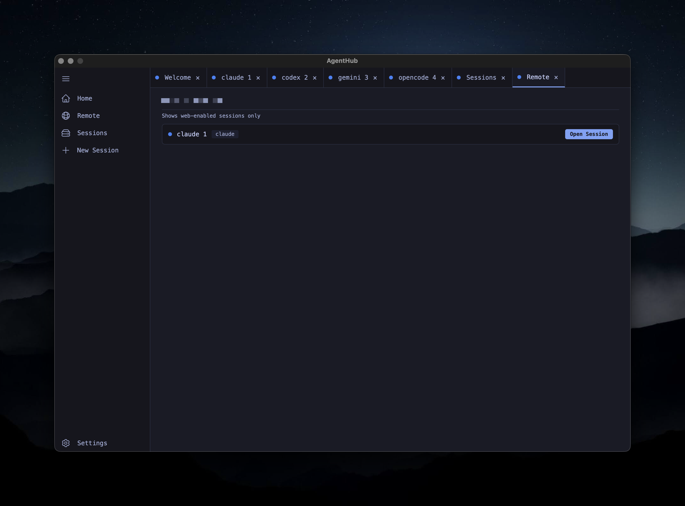
The relay hub fans one session's output to any number of connected clients — desktop, CLI, browser. Each client has its own scrollback, own font size, own identity. Resize arbitrates to the largest dimensions.
agenthub attach --client=macbook.The daemon owns the PTYs, the relay hub, and the web server. Every UI — GUI, CLI, TUI, browser — is a thin client talking over Unix socket or WSS.
Wails · React · xterm.js
agenthub attach / list / new
Bubble Tea v2 · Lip Gloss
dashboard · xterm.js
Safari / Chrome
agenthub on laptop.ts
Tabs for each running agent, a sidebar for sessions and remote peers, and a settings pane for terminal themes, Tailscale status, and the web server. Click a tab to take a look.
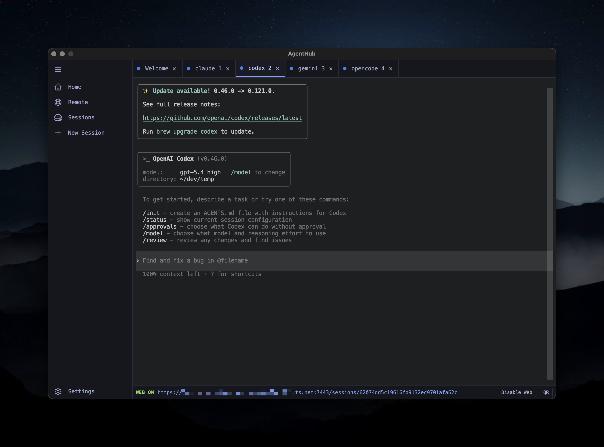
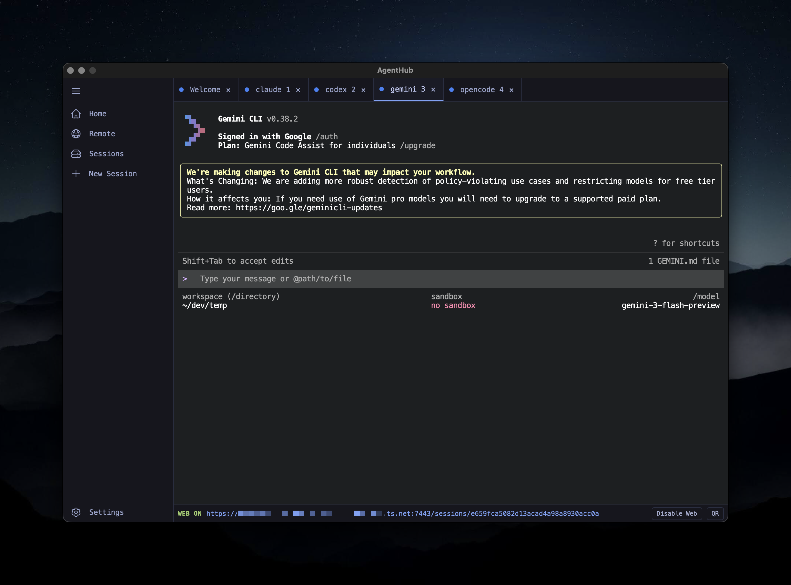
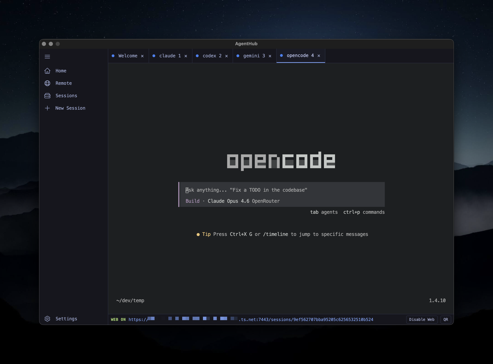
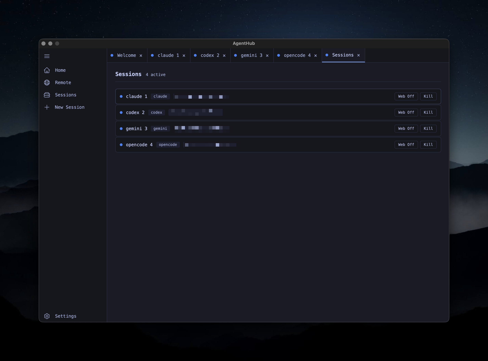
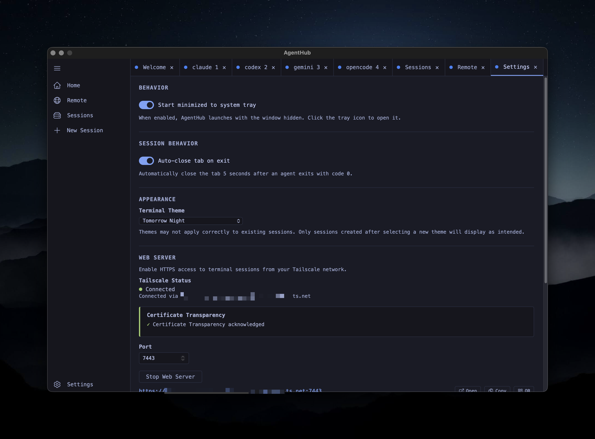
~/.nvm and auto-wired the Warp integration notice.
Codex
Running v0.46.0 with an update banner, gpt-5.4 high. Slash commands and approval flows are fully passed through.
Gemini CLI
Signed in with Google, Gemini Code Assist plan detected. Sandbox state and model picker visible in the status bar.
OpenCode
1.4.10 with Claude Opus 4.6 routed through OpenRouter. AgentHub broadcasts theme changes via SIGUSR2 so it tracks your terminal theme.
Sessions
Every live session across every agent, with per-row Web toggle and Kill. The status dot matches the PTY's activity state.
Remote
Web-enabled sessions on other AgentHub instances across your tailnet. One click opens a proxied terminal session in a new tab.
Settings
v3.3 hyperlinked index at the top, with a Shell binary path row under Paths driving every shell session. v3.2 Plugins panel (8 toggles, inline disclosures), 138 terminal themes, web server controls, v3.1 Security (Regenerate Signing Key, Tailscale 4-state status, CT disclosure), CLI path overrides, tray behavior, and auto-close rules.
Desktop app and full-screen TUI — every pane of both surfaces, captured from a live install with personal data redacted.
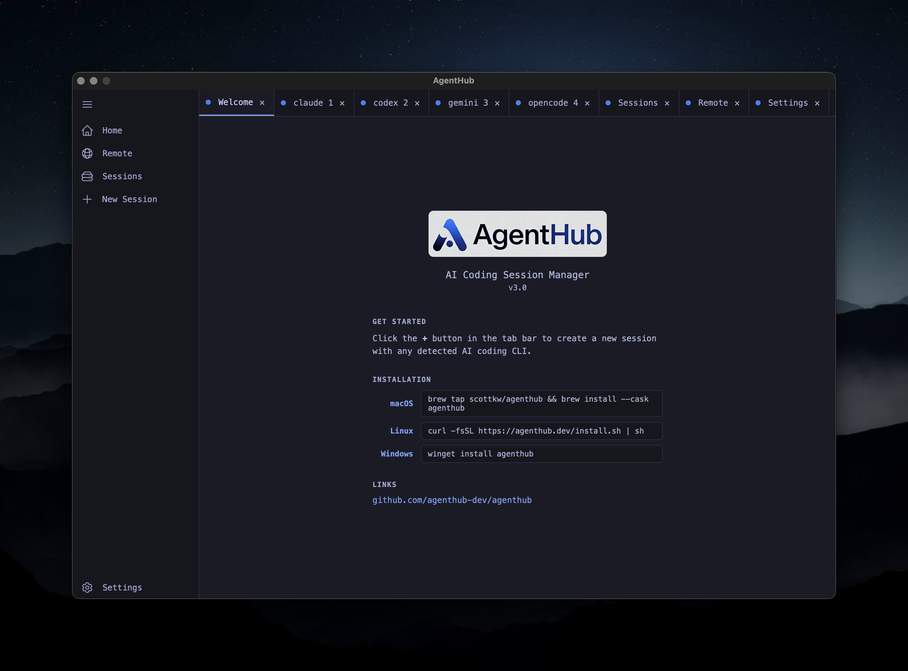
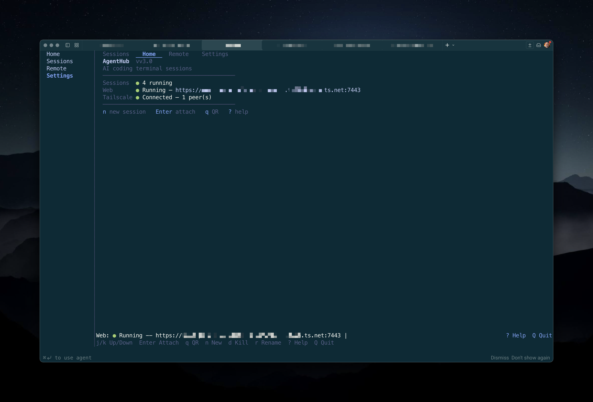
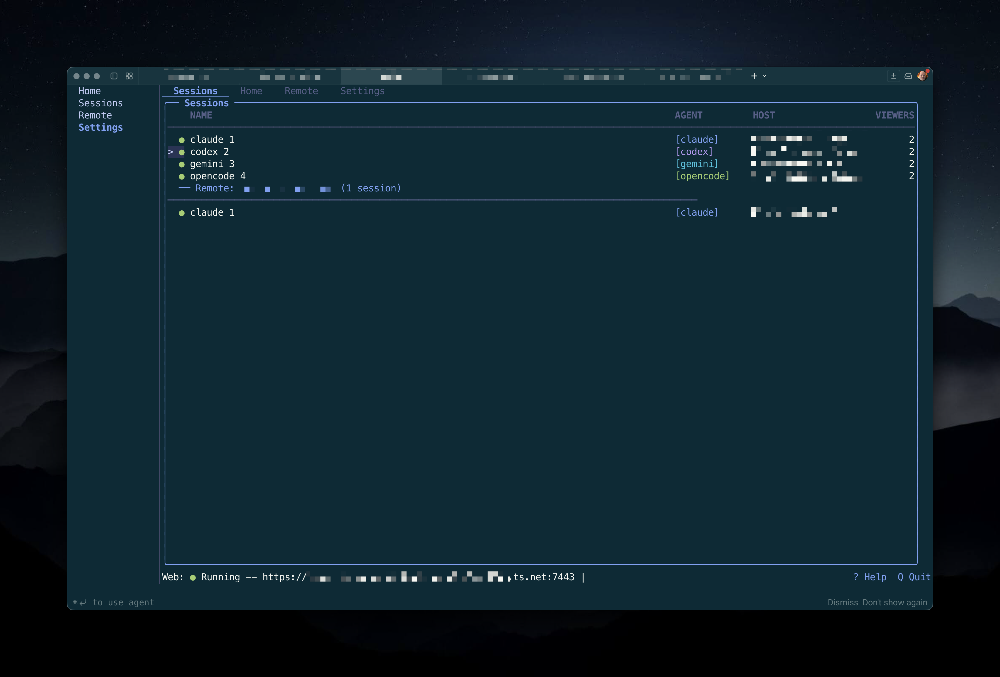
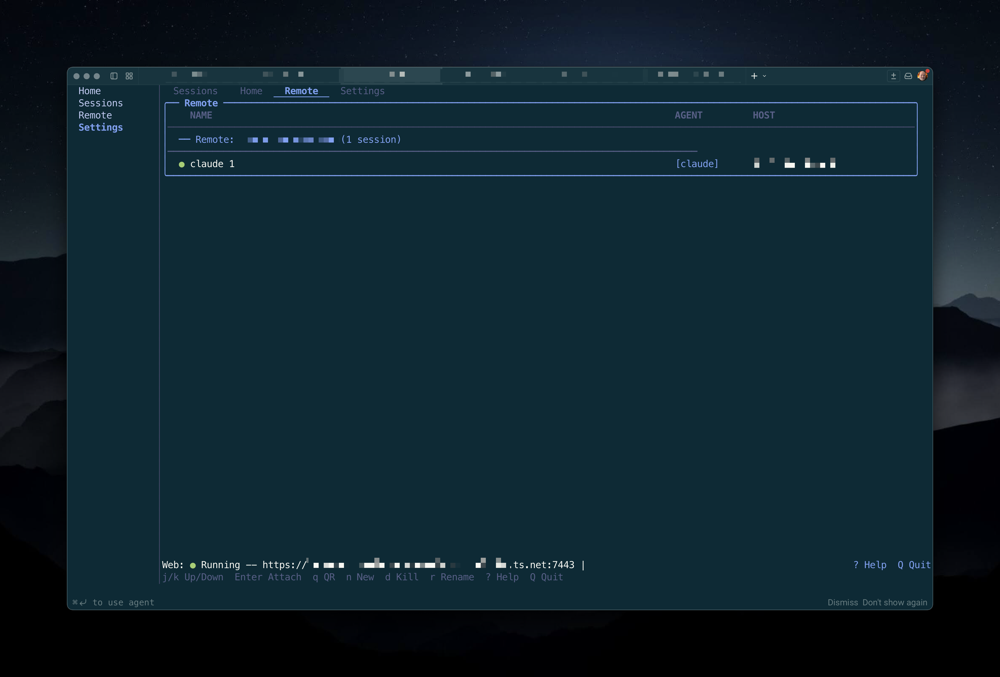
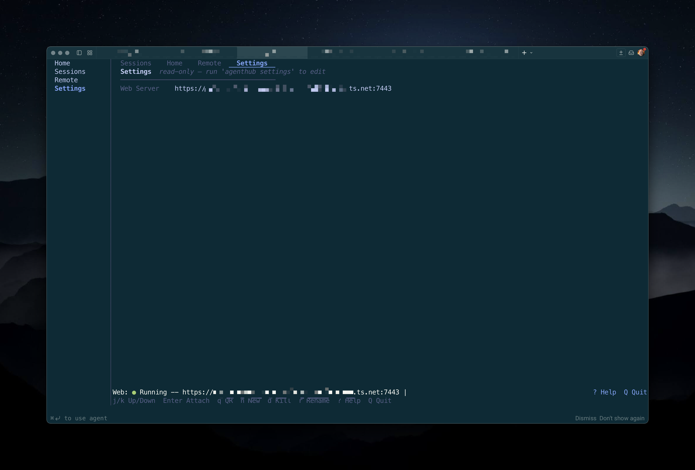
Pick your platform. AgentHub is a single binary that launches a GUI when you run it with no arguments, and dispatches to CLI or TUI when you pass a subcommand.
# launch the GUI agenthub # or straight to a terminal session agenthub new claude-code ~/projects/api # attach from another terminal agenthub attach $(agenthub list --json | jq -r '.[0].id') # share it over Tailscale — QR in the terminal agenthub qr <id>
Free, open-source, and every binary is signed. Drop into any one of four AI CLIs in a second, and keep them running forever.